正则调试工具
对于：
- 写正则：把想要的规则用正则语法写出来
- 看别人的正则：看懂已有正则的含义
期间，可以借助于一些好用的工具，更好的实现自己的目的。
正则可视化
jex.im
新发现一个网站，可视化效果更好：
- 网站：Regulex：JavaScript Regular Expression Visualizer
- 特点：
- 可视化效果好看
- 支持更多选项
- 举例
&name=CrifanLi(?=&language=[a-zA-Z]+)- 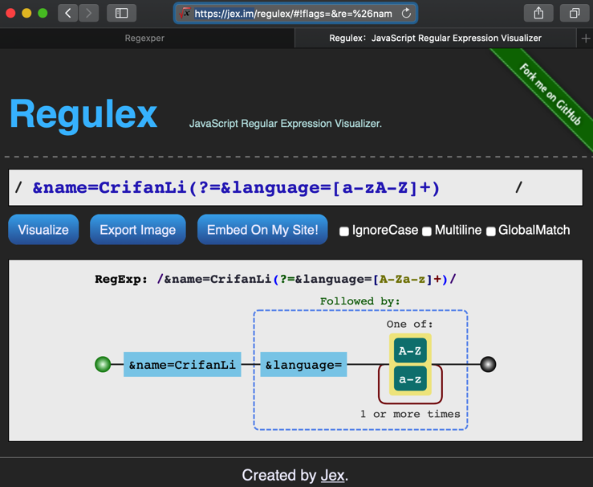
^[^\r\n]+href="(\w+\.mp3)"[^\r\n]+$- 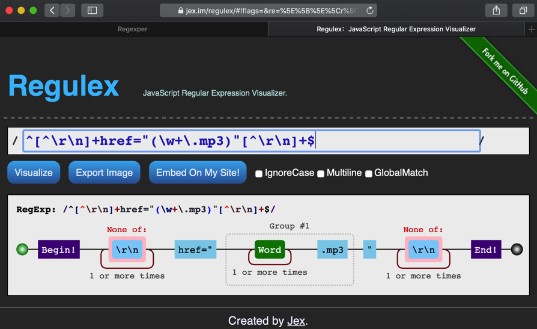
- 特点：
regexper.com
- 网站：https://regexper.com
- 特点：
- 可以把正则表达式，很好的可视化，便于人们理解其内部逻辑和含义
- 能识别高级语法，如
look ahead
- 效果：
&name=CrifanLi(?=&language=[a-zA-Z]+)- 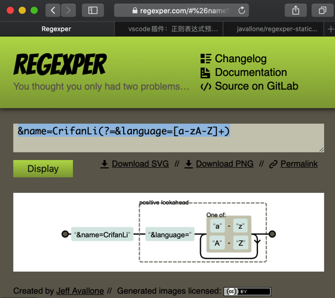
^[^\r\n]+href="(\w+\.mp3)"[^\r\n]+$- 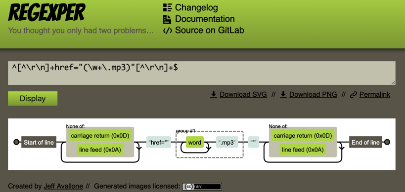
- 特点：
- VSCode的插件：
regexper-static- 效果：插件官方gif动图
- 安装：
- 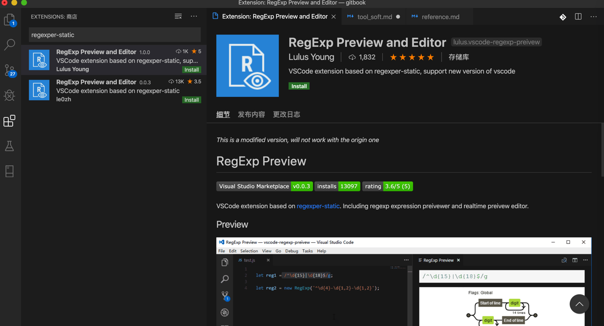
- 使用：
- 选中要可视化的正则表达式字符串->右击->
RegExp Preview- 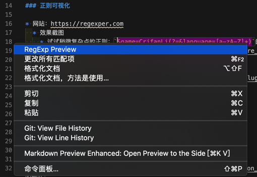
- 选中要可视化的正则表达式字符串->右击->
- 效果：
- 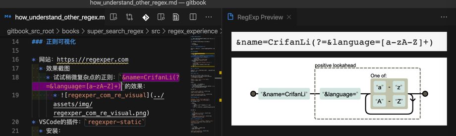
- 效果：插件官方gif动图

在线正则调试网站
另外，有几个在线网站，可以用来学习和理解正则，调试正则表达式：
regexr.com
之前折腾这个期间，发现个好用的网站：
RegExr: Learn, Build, & Test RegEx
优点：
- 匹配内容鼠标移动可高亮显示
- 每个字符精确含义解释
- 可以结构化的，层次清晰的，列出正则表达中每个字符，每个group组等的详细含义。
效果如图：
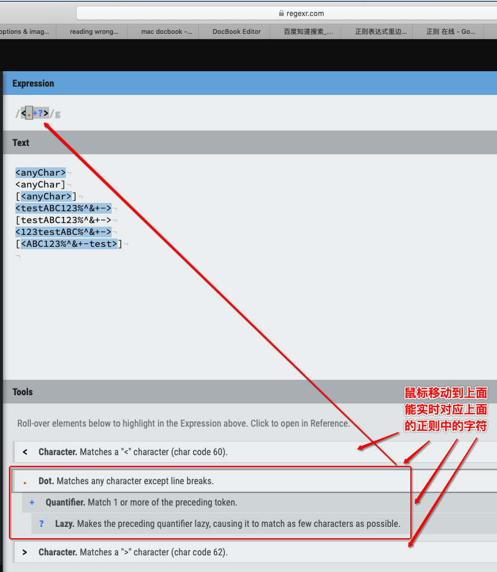
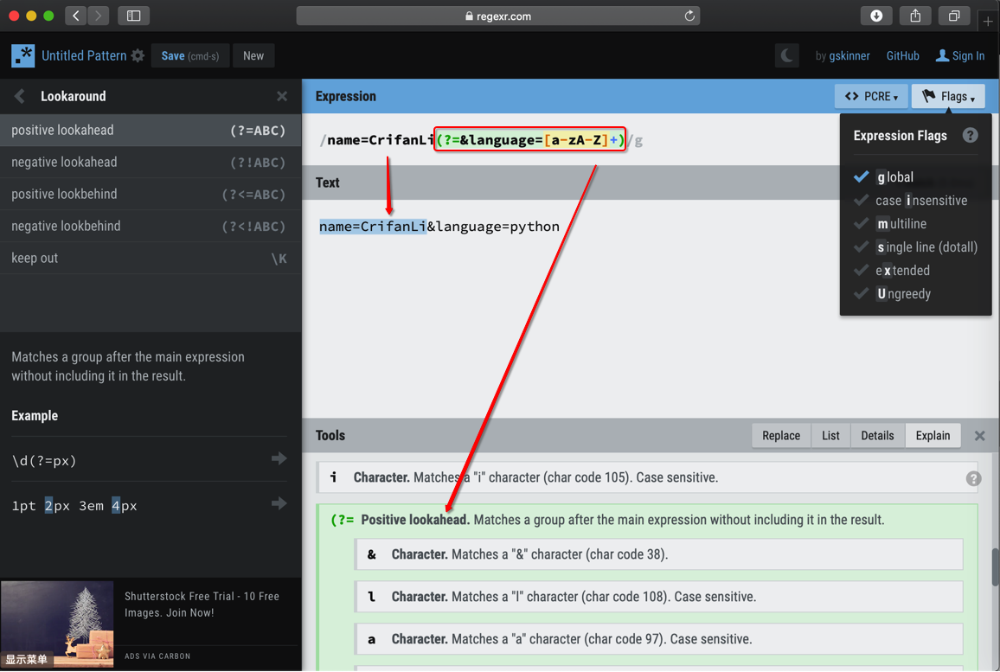
debuggex.com
Debuggex: Online visual regex tester. JavaScript, Python, and PCRE
- 优点：
- 图形化
- 正则表达式的图形化的表示，便于理解
- 进度条
- 对于匹配内容，拖动进度条可以清晰的看到是否匹配
- 图形化
效果如图：
- 图形化
- 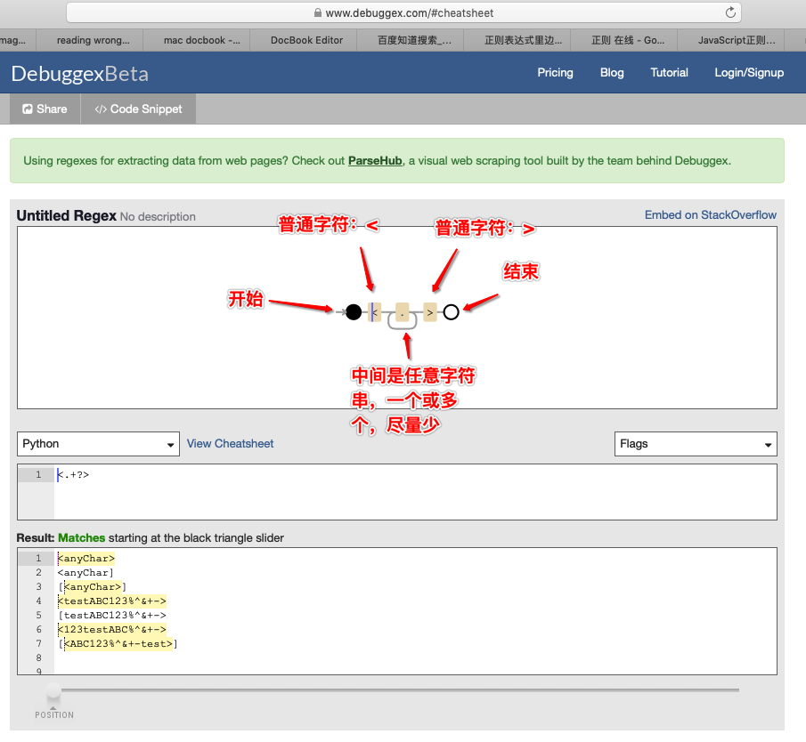
- 进度条
- 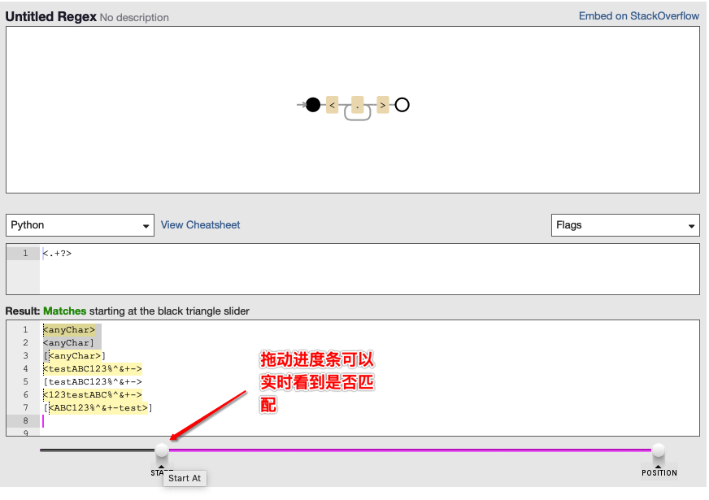
脚本之家的正则测试
JavaScript正则在线测试工具 - 正则表达式工具 - 脚本之家在线工具
优点：
- 是中文网站
- 对于英文不熟悉的容易看懂
- 高亮显示匹配内容
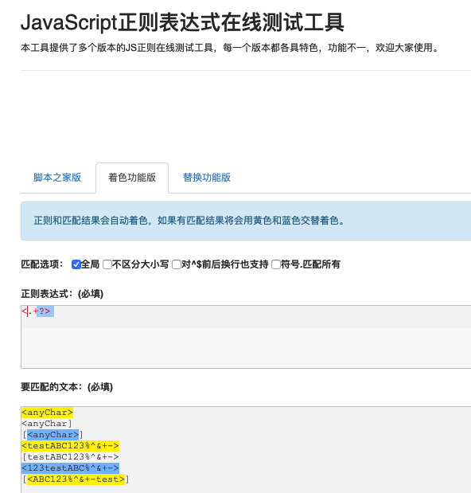